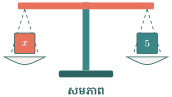
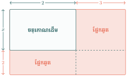
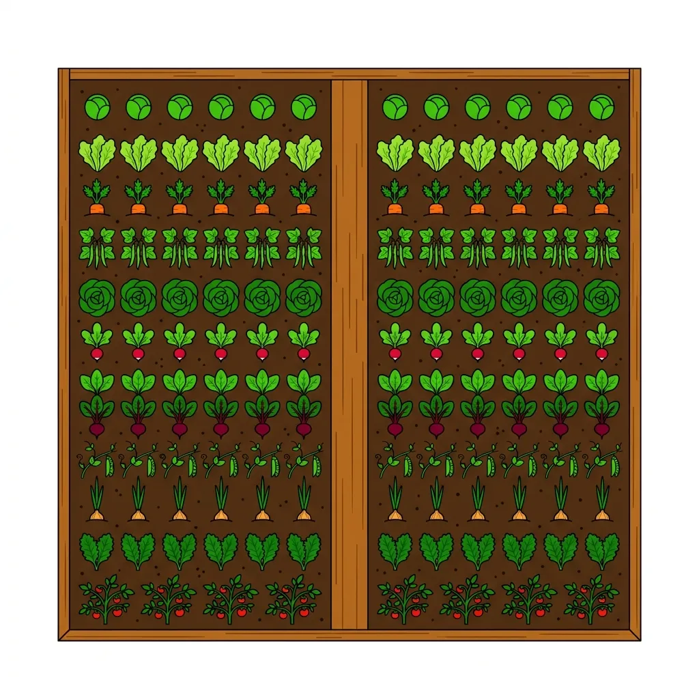
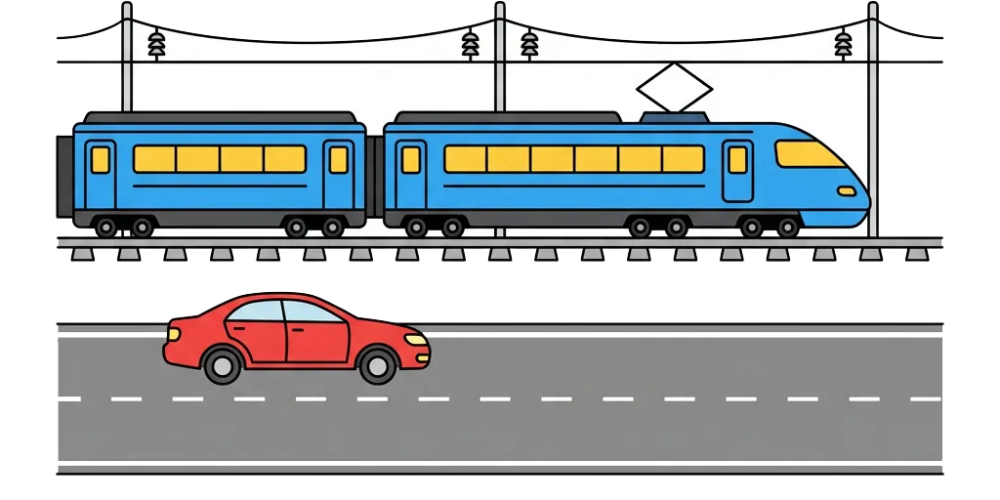

- ដោះស្រាយសមីការលីនេអ៊ែរមានមួយអញ្ញាតបានត្រឹមត្រូវ។
- ដោះស្រាយសមីការដែលមានភាគបែងជាលេខ។
- ដោះស្រាយសមីការដែលអង្គទី១ជាផលគុណនៃកត្តា។
- បកស្រាយ និងដោះស្រាយចំណោទដោយប្រើសមីការលីនេអ៊ែរមានមួយអញ្ញាត។

រំលឹកចំណេះដឹង សួស្ដីប្អូនៗ! ស្វាគមន៍មកកាន់មេរៀនសមីការ។ តើប្អូនៗធ្លាប់លេងហ្គេមទាយលេខទេ?
ឧបមាថា គ្រូមានលេខសម្ងាត់មួយក្នងចិត្ត បើគ្រូយកលេខនោះបូកនឹង ៥ ស្មើនឹង ១២ តើលេខសម្ងាត់នោះជាលេខប៉ុន្មាន? ប្រាកដណាស់វាគឺ ៧ ព្រោះ \(\displaystyle 7 + 5 = 12\)!
តាមពិតទៅ ហ្គេមទាយលេខនេះហើយ ដែលអ្នកគណិតវិទ្យាហៅថា "ការដោះស្រាយសមីការ" ដោយយើងគ្រាន់តែតាងលេខសម្ងាត់នោះដោយអក្សរ \(\displaystyle x\) ប៉ុណ្ណោះ៖ \(\displaystyle x + 5 = 12\) ។ តោះ! ត្រៀមខ្លួនទៅស្វែងរកលេខសម្ងាត់កម្រិតខ្ពស់ជាមួយលោកគ្រូទាំងអស់គ្នា!

តើប្អូនៗនៅចាំចំណេះដឹងពីថ្នាក់ទី ៧ និង ៨ ទាំងនេះទេ? វាជាក្បាច់គុនមូលដ្ឋានសម្រាប់មេរៀននេះ!
១. វិធានប្ដូរអង្គ (Transposition)
ពេលបោះតួឆ្លងកាត់សញ្ញាស្មើ (\(\displaystyle =\)) ត្រូវប្តូរសញ្ញា៖
- ឆ្លងកាត់បូក (+) ទៅ ដក (-) \(\displaystyle \rightarrow\) \(\displaystyle x + 3 = 10 \implies x = 10 - 3\)
- ឆ្លងកាត់គុណ (\(\displaystyle \times\)) ទៅ ចែក (\(\displaystyle \div\)) \(\displaystyle \rightarrow\) \(\displaystyle 2x = 10 \implies x = \frac{10}{2}\)
២. លក្ខណបំបែក (Distributive Property)
\(\displaystyle a(b + c) = ab + ac\)
ឧទាហរណ៍៖ \(\displaystyle 3(x + 4) = 3x + 12\)
៣. ការបូកដកឯកធាដូចគ្នា (Combining Like Terms)
យើងទូទាត់តែមេគុណខាងមុខអក្សរប៉ុណ្ណោះ ចំណែកអក្សររក្សាទុកដដែល។
ឧទាហរណ៍៖ \(\displaystyle 5x - 2x = 3x\)
១. សមីការលីនេអ៊ែរមានមួយអញ្ញាត
លក្ខណៈសមភាព
- ការបូក និងដក៖ បើ \(\displaystyle a = b\) នោះ \(\displaystyle a + c = b + c\) និង \(\displaystyle a - c = b - c\) ។
- ការគុណ និងចែក៖ បើ \(\displaystyle a = b\) នោះ \(\displaystyle ac = bc\) និង \(\displaystyle \frac{a}{c} = \frac{b}{c}\) (ដែល \(\displaystyle c \neq 0\)) ។
ឧទាហរណ៍ទី១ កាលពី ៦ ឆ្នាំមុនខ្ញុំមានអាយុ ៤០ ឆ្នាំ។ តើឆ្នាំនេះខ្ញុំមានអាយុប៉ុន្មាន?
ប្អូនៗសាកស្រមៃមើល! ពេលនេះយើងមិនទាន់ដឹងថាអាយុពិតប្រាកដរបស់ខ្ញុំគឺប៉ុន្មានទេ ដូច្នេះយើងអាចតាងអាយុបច្ចុប្បន្ននេះដោយអក្សរ \(\displaystyle x\) សិន។
ដោយសារប្រធាននិយាយពី "កាលពី ៦ ឆ្នាំមុន" នោះមានន័យថាអាយុត្រូវថយចុះ ៦ ឆ្នាំ ហេតុនេះយើងសរសេរបានថា \(\displaystyle x - 6\) ។ ម៉្យាងវិញទៀត គេប្រាប់ថាអាយុនៅពេលនោះគឺស្មើនឹង ៤០ ឆ្នាំ ទើបយើងអាចទាញបានសមីការយ៉ាងងាយគឺ៖
ដើម្បីទាញរក \(\displaystyle x\) គឺមិនពិបាកទេ! យើងគ្រាន់តែបោះលេខ ៦ ទៅម្ខាងទៀត ហើយកុំភ្លេចប្តូរសញ្ញាពីដក (\(\displaystyle -\)) ទៅបូក (\(\displaystyle +\)) ផងណា៎៖
ដូចនេះ ឆ្នាំនេះអាយុរបស់ខ្ញុំគឺ ៤៦ ឆ្នាំ។ ឃើញទេ ចម្លើយចេញមកហើយ!
ឧទាហរណ៍ទី២ នៅ ៤ ឆ្នាំទៀតខ្ញុំនឹងមានអាយុ ៣២ ឆ្នាំ។ តើឆ្នាំនេះខ្ញុំមានអាយុប៉ុន្មាន?
លំហាត់នេះស្រដៀងគ្នានឹងឧទាហរណ៍មុនដែរ! គ្រាន់តែលើកនេះគេប្រាប់ថា "នៅ ៤ ឆ្នាំទៀត"។ ពេលអនាគត អាយុរបស់យើងច្បាស់ជាកើនឡើងហើយ មែនទេ? ដូច្នេះយើងត្រូវយកអាយុបច្ចុប្បន្ន \(\displaystyle x\) ទៅបូកថែម ៤ ឆ្នាំទៀត។
ពេលនោះអាយុនឹងកើនឡើងដល់ ៣២ ឆ្នាំ ដែលធ្វើឱ្យយើងអាចសរសេរបានសមីការមួយគឺ៖
ដើម្បីទាញរក \(\displaystyle x\) យើងគ្រាន់តែបោះបូក ៤ ទៅម្ខាងទៀត ហើយដូរវាទៅជាដក ៤ វិញ។ សាកធ្វើមើល៖
ដូចនេះ ឆ្នាំនេះអាយុរបស់ខ្ញុំគឺ ២៨ ឆ្នាំកាត់!
ឧទាហរណ៍ទី៣ ពាក់កណ្តាលនៃអាយុខ្ញុំ ទើបស្មើនឹង ២៧ ឆ្នាំ។ តើខ្ញុំមានអាយុប៉ុន្មាន?
ពេលប្អូនៗលឺពាក្យថា "ពាក់កណ្តាល" តើប្អូនៗនឹកឃើញដល់លេខអ្វី? ប្រាកដណាស់ គឺការចែកនឹង ២ ឬគុណនឹងប្រភាគ \(\displaystyle \frac{1}{2}\) ហ្នឹងឯង!
បើយើងតាង \(\displaystyle x\) ជាអាយុរបស់ខ្ញុំ នោះពាក់កណ្តាលនៃអាយុគឺសរសេរបានជា \(\displaystyle \frac{x}{2}\) ។ តាមប្រធានលំហាត់ប្រាប់ថា វានឹងស្មើនឹង ២៧ ឆ្នាំ ទើបយើងអាចសរសេរសមីការបានថា៖
ដើម្បីបំបាត់ភាគបែង ២ នៅផ្នែកខាងឆ្វេង ប្អូនៗគ្រាន់តែបោះលេខ ២ ដែលកំពុងចែកនោះ ទៅគុណនៅខាងស្តាំវិញ៖
ដូចនេះ វ៉ាវ! តាមពិតខ្ញុំមានអាយុដល់ទៅ ៥៤ ឆ្នាំតើ!
វិធាននៃការប្តូរអង្គ
ក្នុងប្រតិបត្តិ គេអាចលើកតួមានអញ្ញាតទៅអង្គម្ខាងនិងតួគ្មានអញ្ញាតទៅអង្គម្ខាងទៀត។ តួណាត្រូវប្ដូរអង្គត្រូវប្ដូរសញ្ញារួចធ្វើប្រមាណវិធី (ពីបូកទៅដក, ពីដកទៅបូក, ពីគុណទៅចែក, ពីចែកទៅគុណ)។
ចំណុចដែលសិស្សតែងតែច្រឡំញឹកញាប់!
ពេលប្តូរតួពីអង្គម្ខាងទៅអង្គម្ខាងទៀត សិស្សភាគច្រើនតែងតែភ្លេចប្តូរសញ្ញា!
- ✗ ខុស៖ \(\displaystyle x - 5 = 10 \implies x = 10 - 5\)
- ✓ ត្រូវ៖ \(\displaystyle x - 5 = 10 \implies x = 10 + 5\)
លំហាត់គំរូទី១ ចូរដោះស្រាយសមីការ \(\displaystyle 7x + 3 = 5x + 13\) ។
ប្អូនៗសង្កេតឃើញថាអក្សរ \(\displaystyle x\) មាននៅសងខាងនៃសញ្ញាស្មើ \(\displaystyle (=)\) មែនទេ? គោលដៅរបស់យើងគឺត្រូវប្រមូលក្រុមអក្សរ \(\displaystyle x\) ឱ្យមកនៅម្ខាង និងក្រុមលេខទទេឱ្យទៅនៅម្ខាងទៀត។ កុំភ្លេចណា៎! ពេលផ្លាស់ទីឆ្លងសញ្ញាស្មើ ត្រូវប្តូរសញ្ញាជានិច្ច!
យើងរុញ \(\displaystyle 5x\) មកខាងឆ្វេង ហើយរុញលេខ \(\displaystyle +3\) ទៅខាងស្តាំ ព្រមទាំងប្តូរសញ្ញា៖
ដូចនេះ \(\displaystyle x = 5\) គឺជាចម្លើយនៃសមីការរបស់យើង! ឃើញថាងាយៗសោះមែនទេ?
លំហាត់គំរូទី២ ចូរដោះស្រាយសមីការ \(\displaystyle 3 - 3x + 5x = 2x + 2\) ។
សមីការនេះរាងវែងបន្តិចហើយ! វិធីល្អបំផុតមុននឹងចាប់ផ្តើមប្តូរអង្គ គឺយើងត្រូវទូទាត់លក្ខណៈដូចគ្នានៅអង្គនីមួយៗឱ្យខ្លីសិន។ បន្ទាប់មកចាំយើងចាប់ផ្តើមផ្លាស់ទីអក្សរទៅម្ខាង លេខទៅម្ខាង។
តើប្អូនៗអាចរកលេខណាដែលយកមកគុណនឹង ០ ហើយចេញស្មើ \(\displaystyle -1\) បានទេ? ច្បាស់ណាស់គឺគ្មានទេ! ព្រោះលេខអ្វីក៏ដោយឱ្យតែគុណនឹងសូន្យ គឺស្មើសូន្យជានិច្ច។ ហេតុនេះយើងសន្និដ្ឋានថា សមីការនេះគ្មានចម្លើយទេ!
លំហាត់គំរូទី៣ ចូរដោះស្រាយសមីការ \(\displaystyle 2x - 4x + 20 = 20 - 2x\) ។
ដូចលំហាត់មុនដែរ មុននឹងប្តូរអង្គ យើងគួរតែបង្រួមវាឱ្យខ្លីសិន។ តោះសាកទូទាត់មើល តើវានឹងចេញរាងកំប្លែងដូចលំហាត់ទី២ទៀត ឬយ៉ាងណា?
លើកនេះចេញ \(\displaystyle 0x = 0\)! មានន័យថា ទោះបីជាប្អូនៗយកលេខអ្វីក៏ដោយ (១, ២, ឬ ១០០០) មកជំនួសកន្លែង \(\displaystyle x\) នោះពេលគុណនឹង ០ វាគង់តែស្មើ ០ ដដែល។ ដូច្នេះ សមីការនេះពិតជានិច្ច! យើងអាចសន្និដ្ឋានបានថា សមីការនេះមានចម្លើយច្រើនរាប់មិនអស់ គឺគ្រប់ចំនួនពិតសុទ្ធតែជាចម្លើយ!
សាកល្បងខ្លួនឯង ចូរដោះស្រាយសមីការខាងក្រោម៖
- \(\displaystyle 6(x - 2) = 3(x - 8)\)
- \(\displaystyle 3x + 5 = 3(x + 2)\)
- \(\displaystyle 6x - 4 = 2 + 6(x - 1)\)
២. សមីការដែលមានភាគបែងជាលេខ
វិធាន
ដើម្បីដោះស្រាយសមីការដឺក្រេទី១ មានមួយអញ្ញាតដែលមានភាគបែងជាលេខ គេត្រូវ៖
- តម្រូវភាគបែងរួមនៃអង្គទាំងពីររបស់សមីការ រួចលុបភាគបែងរួមចោល។
- លើកតួមានអញ្ញាតទៅអង្គម្ខាង និងតួគ្មានអញ្ញាតទៅអង្គម្ខាងទៀត (ប្តូរអង្គត្រូវប្តូរសញ្ញា)។
- គណនា និងទាញរកតម្លៃអញ្ញាត។
គន្លឹះពិសេសពីគ្រូ៖
បើសិនជាមានភាគបែងច្រើន ដូចជា ២, ៣, និង ៤ នោះភាគបែងរួមតូចបំផុត (LCM) គឺ ១២។ កុំគុណភាគបែងចូលគ្នាទាំងអស់ (យក \(\displaystyle 2 \times 3 \times 4 = 24\)) ព្រោះវាធ្វើឱ្យលេខកាន់តែធំ និងពិបាកគណនា!
ឧទាហរណ៍ទី៤ ដោះស្រាយសមីការ \(\displaystyle \displaystyle\frac{8x}{5} + 3 = x\) ។
អុញ! សមីការនេះមានភាគបែង ៥ មកជាប់ទៀត។ កុំបារម្ភអី! ប្អូនៗគ្រាន់តែធ្វើឱ្យគ្រប់តួទាំងអស់មានភាគបែង ៥ ដូចគ្នាសិនទៅ។ លេខ ៣ យើងគុណភាគយកនិងភាគបែងនឹង ៥ ដើម្បីបាន \(\displaystyle \frac{15}{5}\) ចំណែកឯអក្សរ \(\displaystyle x\) យើងគុណនឹង ៥ ដូចគ្នាបានជា \(\displaystyle \frac{5x}{5}\) ។
ពេលដែលភាគបែងដូចគ្នាហើយ យើងអាច "លុប" ភាគបែងចោលបានយ៉ាងងាយ៖
ដូចនេះ \(\displaystyle x = -5\) ជាចម្លើយនៃសមីការ។ ងាយៗមែនទេ?
លំហាត់គំរូ ចូរដោះស្រាយសមីការ \(\displaystyle \displaystyle\frac{3x - 1}{6} - \frac{x + 1}{12} = \frac{x - 5}{4} + \frac{x}{6}\) ។
នៅទីនេះមានភាគបែង ៦, ១២, និង ៤។ តើប្អូនៗដឹងទេថាភាគបែងរួមតូចបំផុតរបស់វាគឺប៉ុន្មាន? បើប្អូនៗគិតបន្តិច គឺ ១២! ដូច្នេះយើងត្រូវគុណលេខបន្ថែមនៅភាគយក ដើម្បីឱ្យភាគបែងនីមួយៗកា្លយជា ១២ ទាំងអស់។
ពេលភាគបែងស្មើ ១២ អស់ហើយ យើងគ្រាន់តែលុបវាចោល រួចធ្វើការទូទាត់ជាការស្រេច៖
ដោយសារគ្មានលេខណាគុណនឹង ០ ហើយចេញ \(\displaystyle -12\) ទេ លោកគ្រូសូមសន្និដ្ឋានថា សមីការនេះគ្មានចម្លើយឡើយ!
សាកល្បងខ្លួនឯង ចូរដោះស្រាយសមីការខាងក្រោម៖
- \(\displaystyle \displaystyle\frac{3x}{4} + 9 = \frac{x}{2} + 15\)
- \(\displaystyle \displaystyle\frac{x + 7}{6} + \frac{2x - 8}{2} = -4\)
៣. សមីការដែលអង្គទី១ជាផលគុណនៃកត្តា
ងាយយល់
ពិនិត្យតារាងផលគុណខាងក្រោម៖
| កត្តា \(\displaystyle A\) | កត្តា \(\displaystyle B\) | ផលគុណ \(\displaystyle A \times B\) |
| \(\displaystyle 3\) | \(\displaystyle 0\) | \(\displaystyle \mathbf{0}\) |
| \(\displaystyle 0\) | \(\displaystyle 3\) | \(\displaystyle \mathbf{0}\) |
| \(\displaystyle 0\) | \(\displaystyle 0\) | \(\displaystyle \mathbf{0}\) |
យើងឃើញថា ដើម្បីឱ្យផលគុណនៃកត្តា \(\displaystyle A \times B\) ស្មើនឹង ០ លុះត្រាតែកត្តា \(\displaystyle A = 0\) ឬ \(\displaystyle B = 0\) ។ គេអាចអនុវត្តលក្ខណៈនេះដើម្បីដោះស្រាយសមីការ។
វិធាន
បើ \(\displaystyle A \times B = 0\) នោះគេបាន \(\displaystyle A = 0\) ឬ \(\displaystyle B = 0\) ។
ដើម្បីដោះស្រាយសមីការមានមួយអញ្ញាតដែលអង្គទី១មានអញ្ញាតជាដឺក្រេទី២ គេត្រូវសរសេរអង្គទី១ជាផលគុណកត្តានៃដឺក្រេទី១ ហើយឱ្យអង្គម្ខាងទៀតស្មើ ០។
ឧទាហរណ៍ទី៥ ដោះស្រាយសមីការ \(\displaystyle (x - 1)(x - 2) = 0\) ។
ប្អូនៗឃើញសមីការនេះទេ? វាស្ថិតក្នុងរាងកត្តា \(\displaystyle A \times B = 0\) រួចស្រេចបាត់ទៅហើយ! ដូចយើងទើបតែដឹងអញ្ចឹង កាលណាផលគុណនៃពីរតួស្មើ ០ លុះត្រាតែមានកត្តាណាមួយស្មើ ០ ជាមុនសិន។
ដូច្នេះ យើងគ្រាន់តែចាប់កត្តានីមួយៗឱ្យស្មើ ០ រួចទាញរក \(\displaystyle x\) ទៅជាការស្រេច៖
ឃើញទេ? សមីការនេះមានចម្លើយដល់ទៅពីរ! គឺ \(\displaystyle x = 1\) និង \(\displaystyle x = 2\) ។
ឧទាហរណ៍ទី៦ ដោះស្រាយសមីការ \(\displaystyle x^2 - 9 = 0\) ។
នៅទីនេះយើងឃើញមាន \(\displaystyle x^2 - 9 = 0\) ដែលវាមិនទាន់ជារាងកត្តាទេ។ ប៉ុន្តែប្អូនៗសាកគិតមើល តើ ៩ ជាការេនៃលេខប៉ុន្មាន? គឺ ៣! ដូច្នេះវាចូលរូបមន្តផលសងការេ \(\displaystyle a^2 - b^2\) ហើយតើ!
តោះបំបែកវាជាផលគុណកត្តា ដោយប្រើរូបមន្តដ៏ពេញនិយមរបស់យើង \(\displaystyle a^2 - b^2 = (a-b)(a+b)\) ទាំងអស់គ្នា៖
ពេលនេះយើងគ្រាន់តែចាប់កត្តានីមួយៗឱ្យស្មើ ០ ដូចឧទាហរណ៍មុនអញ្ចឹង៖
ដូចនេះ ចម្លើយរបស់យើងគឺ \(\displaystyle x = 3\) និង \(\displaystyle x = -3\) ។
លំហាត់គំរូ ចូរដោះស្រាយសមីការ \(\displaystyle x^2 - 6x - 7 = 0\) ។
ប្អូនៗឃើញទេ នេះជាសមីការដឺក្រេទី២ ដែលមានតួដល់ទៅ ៣! យើងមិនអាចផ្តុំ \(\displaystyle x\) ធម្មតាដូចដឺក្រេទី១បានទេ យើងត្រូវប្រើល្បិចបន្តិច ដោយបំបែកវាជាផលគុណនៃកត្តា។
លោកគ្រូនឹងបង្ហាញពីវិធី "បំពេញនិងបន្ថយតួ" ដើម្បីបង្កើតជាការេនៃទ្វេធា។ យើងយកមេគុណកណ្តាល \(\displaystyle -6\) ចែកនឹង ២ បាន \(\displaystyle -3\) រួចយកវាទៅលើកជាការេគឺបាន ៩។ ដូច្នេះយើងត្រូវបូកថែម ៩ ហើយដក ៩ វិញភ្លាមៗកុំឱ្យខូចតម្លៃដើម៖
ពេលនេះ យើងគ្រាន់តែចាប់កត្តានីមួយៗឱ្យស្មើសូន្យ៖
ដូចនេះ សមីការមានចម្លើយពីរគឺ \(\displaystyle x = 7\) និង \(\displaystyle x = -1\) ។
សាកល្បងខ្លួនឯង ចូរដោះស្រាយសមីការខាងក្រោម៖
- \(\displaystyle x^2 + 2x - 4x - 8 = 0\)
- \(\displaystyle (2x - 1)^2 - (x + 3)^2 = 0\)
- \(\displaystyle 3x^2 + 9x = 0\)
- \(\displaystyle 2x^2 + 3x - 5 = 0\)
៤. ដោះស្រាយសមីការដឺក្រេទីពីរ តាមឌីសគ្រីមីណង់
ប្អូនៗប្រហែលជាធ្លាប់ជួបសមីការដឺក្រេទីពីរខ្លះ ដែលមិនអាចបំបែកជាផលគុណកត្តាបានងាយៗទេ។ ក្នុងករណីនេះ គណិតវិទូមានអាវុធសម្ងាត់មួយហៅថា "ឌីសគ្រីមីណង់" (Discriminant) ដែលតាងដោយអក្សរក្រិច \(\displaystyle \Delta\) (អានថា ដែលតា)។
តើអាវុធសម្ងាត់នេះមានប្រភពមកពីណា? ជាទូទៅ ការទន្ទេញរូបមន្តដោយមិនយល់ប្រភពដើមជារឿងគួរឱ្យធុញណាស់! ដូច្នេះ លោកគ្រូនឹងបង្ហាញពីវិធីរកវា ដោយប្រើបច្ចេកទេស "បំពេញជាការេ" ដែលយើងទើបតែអនុវត្តរួចរាល់អម្បាញ់មិញនេះ។
តោះសាកល្បងជាមួយសមីការទូទៅ \(\displaystyle ax^2 + bx + c = 0\) ដែល \(\displaystyle a \neq 0\) ៖
ឥឡូវដើម្បីបង្កើតជាការេនៃទ្វេធា យើងប្រើវិធី "បន្ថែមនិងបន្ថយតួ" ដោយយកមេគុណកណ្តាលចែកនឹង ២ រួចលើកជាការេ។ មេគុណកណ្តាលគឺ \(\displaystyle \frac{b}{a}\) ចែកនឹង ២ បាន \(\displaystyle \frac{b}{2a}\) ។ ដូច្នេះយើងត្រូវបូកថែម \(\displaystyle \left(\frac{b}{2a}\right)^2\) ហើយដកវាចេញមកវិញភ្លាមៗកុំឱ្យខូចតម្លៃដើម៖
នៅផ្នែកខាងស្តាំ យើងត្រូវតម្រូវភាគបែងរួម គឺ \(\displaystyle 4a^2\)៖
ប្អូនៗឃើញកន្សោមនៅលើភាគយកផ្នែកខាងស្តាំទេ? គឺ \(\displaystyle b^2 - 4ac\) ហ្នឹងឯង! ដោយសារកន្សោមនេះវារាងវែង ហើយគេប្រើវាញឹកញាប់ពេក ទើបគណិតវិទូសម្រេចចិត្តតាងវាដោយអក្សរ \(\displaystyle \Delta\) ទៅ។
រូបមន្តឌីសគ្រីមីណង់ \(\displaystyle \Delta\)
ចំពោះសមីការដឺក្រេទីពីរមានរាងទូទៅ \(\displaystyle ax^2 + bx + c = 0\) (ដែល \(\displaystyle a \neq 0\)) យើងមានរូបមន្ត៖
យោងតាមតម្លៃនៃ \(\displaystyle \Delta\) យើងមាន ៣ ករណី៖
- បើ \(\displaystyle \Delta > 0\) ៖ សមីការមានឫសពីរផ្សេងគ្នា គឺ \(\displaystyle \displaystyle x_1 = \frac{-b - \sqrt{\Delta}}{2a}\) និង \(\displaystyle \displaystyle x_2 = \frac{-b + \sqrt{\Delta}}{2a}\) ។
- បើ \(\displaystyle \Delta = 0\) ៖ សមីការមានឫសឌុប (ឫសតែមួយ) គឺ \(\displaystyle \displaystyle x_1 = x_2 = \frac{-b}{2a}\) ។
- បើ \(\displaystyle \Delta < 0\) ៖ សមីការគ្មានឫសជាចំនួនពិតទេ។
ឧទាហរណ៍ទី៧ ដោះស្រាយសមីការ \(\displaystyle 2x^2 - 5x + 3 = 0\) ។
តោះយើងកំណត់មេគុណសិន៖ \(\displaystyle a = 2\), \(\displaystyle b = -5\), និង \(\displaystyle c = 3\) ។ យើងជំនួសចូលរូបមន្ត \(\displaystyle \Delta = b^2 - 4ac\) ៖
ដោយសារ \(\displaystyle \Delta = 1 > 0\) នោះ \(\displaystyle \sqrt{\Delta} = \sqrt{1} = 1\) ។ សមីការមានឫសពីរផ្សេងគ្នា៖
ដូចនេះ សមីការមានចម្លើយ \(\displaystyle x = 1\) និង \(\displaystyle x = \frac{3}{2}\) ។ ឃើញទេ! មិនបាច់ខំគិតបំបែកកត្តាទេ គ្រាន់តែអនុវត្តរូបមន្តគឺចេញចម្លើយតែម្តង។
ឧទាហរណ៍ទី៨ ដោះស្រាយសមីការ \(\displaystyle x^2 - 4x + 4 = 0\) ។
នៅទីនេះមេគុណគឺ \(\displaystyle a = 1\), \(\displaystyle b = -4\), និង \(\displaystyle c = 4\) ។
អូ! \(\displaystyle \Delta = 0\) មានន័យថាសមីការមានឫសឌុប៖
ដូចនេះ សមីការមានឫសតែមួយគត់គឺ \(\displaystyle x = 2\) ។
ឧទាហរណ៍ទី៩ ដោះស្រាយសមីការ \(\displaystyle x^2 + x + 1 = 0\) ។
យើងមានមេគុណ \(\displaystyle a = 1\), \(\displaystyle b = 1\), និង \(\displaystyle c = 1\) ។
ដោយសារ \(\displaystyle \Delta = -3 < 0\) (អវិជ្ជមាន) នោះយើងមិនអាចទាញឫសការេនៃចំនួនអវិជ្ជមានបានទេក្នុងសំណុំចំនួនពិត។ ដូចនេះ សមីការគ្មានចម្លើយទេ។
ហេតុអ្វីបានជា \(\displaystyle \Delta < 0\) គ្មានចម្លើយ?
ប្អូនៗសាកគិតមើល តើមានចំនួនពិតណាដែលគុណនឹងខ្លួនឯង (លើកជាការេ) ហើយទទួលបានលទ្ធផលជាចំនួនអវិជ្ជមានដែរឬទេ? ចម្លើយគឺ គ្មានទេ! (ឧទាហរណ៍ \(\displaystyle 2^2 = 4\) ចំណែក \(\displaystyle (-2)^2 = 4\) ដដែល)។
ដោយសាររូបមន្តឫសគឺ \(\displaystyle x = \frac{-b \pm \sqrt{\Delta}}{2a}\) ដែលតម្រូវឱ្យយើងរកឫសការេនៃ \(\displaystyle \Delta\)។ បើ \(\displaystyle \Delta\) អវិជ្ជមាន នោះយើងមិនអាចរកឫសការេរបស់វាបានឡើយក្នុងសំណុំចំនួនពិត។ មានន័យថា ទោះបីជាប្អូនៗយកតម្លៃ \(\displaystyle x\) ជាចំនួនពិតណាមួយក៏ដោយ មកជំនួសក្នុងសមីការ \(\displaystyle x^2+x+1=0\) លទ្ធផលរបស់វានឹងមិនអាចស្មើនឹងសូន្យបានឡើយ ទើបយើងសន្និដ្ឋានថា សមីការនេះពិតជាគ្មានចម្លើយប្រាកដមែន!

សាកល្បងខ្លួនឯង ចូរដោះស្រាយសមីការដឺក្រេទីពីរខាងក្រោមតាមឌីសគ្រីមីណង់៖
- \(\displaystyle x^2 - 7x + 10 = 0\)
- \(\displaystyle 3x^2 - 2x - 5 = 0\)
- \(\displaystyle 4x^2 + 12x + 9 = 0\)
- \(\displaystyle 2x^2 + x + 3 = 0\)
៥. ចំណោទសមីការដឺក្រេទី១មានមួយអញ្ញាត
ជំហានក្នុងការដោះស្រាយចំណោទ
- សម្មតិកម្ម និងសំណួរ៖ អានប្រធានឱ្យយល់ រកមើលថាតើគេប្រាប់អ្វីខ្លះ ហើយគេសួររកអ្វី?
- តាងអញ្ញាត៖ តាងអញ្ញាតជាបរិមាណដែលមិនស្គាល់ ហើយកំណត់លក្ខខណ្ឌនៃអញ្ញាតនោះ។
- ចងក្រងសមីការ៖ បកប្រែភាសាប្រធានទៅជាភាសាគណិតវិទ្យា (សមីការ)។
- ដោះស្រាយសមីការ៖ រកតម្លៃអញ្ញាត។
- ផ្ទៀងផ្ទាត់ និងឆ្លើយ៖ ផ្ទៀងផ្ទាត់ចម្លើយទៅនឹងលក្ខខណ្ឌនៃប្រធាន រួចឆ្លើយតបនឹងសំណួរ។
លំហាត់គំរូទី១ បច្ចុប្បន្នកាលនេះឪពុកមានអាយុ ៤២ ឆ្នាំ ហើយកូនមានអាយុ ១៥ ឆ្នាំ។ តើនៅប៉ុន្មានឆ្នាំទៀតទើបអាយុឪពុកស្មើនឹងពីរដងនៃអាយុកូន?
ចំណោទនេះចង់ឱ្យយើងរក "ចំនួនឆ្នាំទៅមុខទៀត" ដូច្នេះយើងអាចតាងវាដោយអក្សរ \(\displaystyle t\)។ ចំណុចសំខាន់ដែលប្អូនៗត្រូវចាំគឺ ពេលពេលវេលាកន្លងផុតទៅ ទាំងឪពុក និងកូន គឺអាយុកើនឡើង \(\displaystyle t\) ឆ្នាំស្មើៗគ្នា!
បច្ចុប្បន្នឪពុកមានអាយុ ៤២ ឆ្នាំ ឯកូន ១៥ ឆ្នាំ។ នៅ \(\displaystyle t\) ឆ្នាំទៀត អាយុឪពុកនឹងក្លាយជា \(\displaystyle 42 + t\) ហើយអាយុកូននឹងក្លាយជា \(\displaystyle 15 + t\)។
ដោយប្រធានប្រាប់ថា អាយុឪពុកនឹង "ស្មើនឹង ២ ដងនៃអាយុកូន" ដូច្នេះយើងចងបានសមីការដ៏ស្រស់ស្អាតមួយគឺ៖
ឥឡូវយើងមកដោះស្រាយសមីការនេះទាំងអស់គ្នា៖
តោះយើងសាកផ្ទៀងផ្ទាត់មើល! បើ ១២ ឆ្នាំទៀត ឪពុកមានអាយុ \(\displaystyle 42 + 12 = 54\) ឆ្នាំ ឯកូនអាយុ \(\displaystyle 15 + 12 = 27\) ឆ្នាំ។ យកអាយុកូនគុណនឹង ២ គឺ \(\displaystyle 2 \times 27 = 54\)។ ឃើញទេ? ពិតជាត្រឹមត្រូវបេះបិទ!
ដូចនេះ ត្រូវរង់ចាំ ១២ ឆ្នាំទៀត ទើបអាយុឪពុកស្មើពីរដងអាយុកូន។
លំហាត់គំរូទី២ ពីមុននំប៉័ងមួយលក់ថ្លៃ ៥០០ រៀល។ បើគេចង់បង្កើនថ្លៃលក់ ១៨% តើគេត្រូវលក់ថ្លៃប៉ុន្មាន?
ចំណោទភាគរយបែបនេះជួបញឹកញាប់ណាស់ក្នុងជីវិតប្រចាំថ្ងៃ! ប្អូនៗត្រូវដឹងថា "ភាគរយកំណើន" គឺស្មើនឹង "ប្រាក់ដែលឡើងថ្លៃ" ចែកនឹង "ប្រាក់ដើម"។
តោះយើងតាង \(\displaystyle x\) ជាតម្លៃលក់ថ្មី ដែលច្បាស់ណាស់ថាវានឹងធំជាងតម្លៃចាស់ ៥០០ រៀល។ ប្រាក់ដែលឡើងថ្លៃគឺស្មើនឹងតម្លៃថ្មីដកតម្លៃចាស់ គឺ \(\displaystyle x - 500\) ។
បើគិតជាភាគរយកំណើនគឺយកវាទៅចែកនឹង ៥០០ ដែលស្មើនឹងបំណងប្រាថ្នារបស់អ្នកលក់ គឺ \(\displaystyle \frac{18}{100}\) ។ ដូច្នេះយើងបានសមីការ៖
ដូចនេះ ដើម្បីបានចំណេញ ១៨% អ្នកលក់ត្រូវលក់នំប៉័ងក្នុងតម្លៃ ៥៩០ រៀល។
លំហាត់គំរូទី៣ (ធរណីមាត្រ) ចតុកោណកែងមួយមានវិមាត្រ \(\displaystyle x\) និង ២ (គិតជា m)។ គេបង្កើនវិមាត្រទាំងពីររៀងគ្នា ២ និង ៣ បន្ថែមទៀត។ រកតម្លៃ \(\displaystyle x\) ដើម្បីឱ្យផ្ទៃក្រឡានៃផ្នែកដែលកើនឡើង (ផ្នែកឆូត) ស្មើនឹងពីរដងនៃផ្ទៃក្រឡាចតុកោណកែងដើម។

នេះជាចំណោទធរណីមាត្រ! ដើម្បីកុំឱ្យច្រឡំ ប្អូនៗត្រូវគូសរូបចេញមកក្រៅ នោះនឹងងាយស្រួលមើលឃើញទំហំដែលប្រែប្រួល។
ដំបូងយើងមើលផ្ទៃក្រឡាចាស់៖ វាមានទទឹង ២ និងបណ្តោយ \(\displaystyle x\) ដូច្នេះផ្ទៃរបស់វាគឺ \(\displaystyle 2x\) ។ បន្ទាប់ពីគេពង្រីក ទទឹងកើនដល់ \(\displaystyle 2 + 3 = 5\) ហើយបណ្តោយកើនដល់ \(\displaystyle x + 2\) ដែលធ្វើឱ្យផ្ទៃក្រឡាថ្មីសរុបក្លាយជា \(\displaystyle 5(x + 2)\) ។
ដើម្បីរកផ្ទៃក្រឡាឆូតដែលកើនឡើង យើងគ្រាន់តែយកផ្ទៃសរុបថ្មី ដកផ្ទៃចាស់ចេញ គឺបាន \(\displaystyle 5(x + 2) - 2x\) ។ តាមប្រធាន គេប្រាប់ថាផ្ទៃក្រឡាឆូតនេះត្រូវតែស្មើ ២ ដងនៃផ្ទៃក្រឡាចាស់។ ដូច្នេះយើងបានសមីការ៖
ឃើញទេថាចំណោទធរណីមាត្រមិនពិបាកដូចដែលយើងគិតទេ! ពេលយើងដោះស្រាយរួច តម្លៃដែលយើងទទួលបានគឺ \(\displaystyle x = 10\text{ m}\) ។
សាកល្បងខ្លួនឯង
- ម៉ារីមានអាយុ ៨ ឆ្នាំ ច្រើនជាងអាយុបូណា។ ផលបូកអាយុរបស់ម៉ារីនិងបូណាស្មើនឹង ៣៨ ឆ្នាំ។ ចូររកអាយុរបស់បូណា។
- ថែម ៧ លើពីរដងនៃមួយចំនួនស្មើនឹងបន្ថយ ២៧ លើបីដងនៃចំនួននោះ។ ចូររកចំនួននោះ។
លំហាត់អនុវត្តន៍
កម្រិតទី១៖ ចាប់ផ្តើម
- ៤.១ ចូរដោះស្រាយសមីការខាងក្រោម៖
- ៤.២ ចូរដោះស្រាយសមីការ៖
កម្រិតទី២៖ អនុវត្ត
- ៤.៣ ចូរដោះស្រាយសមីការដែលមានភាគបែងជាលេខ៖
- ៤.៤ ចូរដោះស្រាយសមីការដឺក្រេទី២ ដោយបំបែកជាកត្តា៖
កម្រិតទី៣៖ គិតបន្ថែម
- ៤.៥ ចំណោទបញ្ញា
លំហាត់វាយតម្លៃសមត្ថភាព PISA
ជួលកង់នៅសៀមរាប
សិស្សមួយក្រុមបានធ្វើដំណើរកម្សាន្តទៅខេត្តសៀមរាប ហើយពួកគេចង់ជួលកង់ជិះកម្សាន្តនៅតំបន់អង្គរ។ ពួកគេបានសាកសួរតម្លៃពីហាងជួលកង់ចំនួនពីរ៖
- ហាង ក៖ តម្រូវឱ្យបង់ប្រាក់កក់មុន ២ដុល្លារ ហើយគិតថ្លៃ ១ដុល្លារ ក្នុងមួយម៉ោង។
- ហាង ខ៖ មិនតម្រូវឱ្យបង់ប្រាក់កក់ទេ ប៉ុន្តែគិតថ្លៃ ១.៥ដុល្លារ ក្នុងមួយម៉ោង។
សំណួរទី១៖ បើតាង \(\displaystyle h\) ជាចំនួនម៉ោងដែលពួកគេជិះកង់ តើសមីការមួយណាដែលត្រឹមត្រូវសម្រាប់គណនាប្រាក់ត្រូវបង់សរុបនៅហាង ក?
- ក. \(\displaystyle 1 + 2h\)
- ខ. \(\displaystyle 2 + 1h\)
- គ. \(\displaystyle 1.5h + 2\)
- ឃ. \(\displaystyle 3h\)
សំណួរទី២៖ តើពួកគេត្រូវជិះកង់រយៈពេលប៉ុន្មានម៉ោង ទើបការចំណាយនៅហាង ក និង ហាង ខ មានតម្លៃស្មើគ្នាពិតប្រាកដ?
ចម្លើយ៖
សំណួរទី៣៖ ប្រសិនបើសិស្សម្នាក់មានប្រាក់យ៉ាងច្រើនបំផុតត្រឹមតែ ១០ដុល្លារ តើគាត់គួរជ្រើសរើសជួលកង់នៅហាងណាមួយ ដើម្បីអាចជិះកង់បានរយៈពេលយូរជាងគេ? ចូរពន្យល់។
ចម្លើយ៖
សួនបន្លែសាលារៀន

សាលារៀនមួយចង់រៀបចំសួនបន្លែរាងចតុកោណកែងមួយនៅខាងក្រោយអគារសិក្សា។ គណៈគ្រប់គ្រងសាលាបានកំណត់ថា បណ្ដោយរបស់សួនត្រូវតែវែងជាងទទឹង ៤ម៉ែត្រ ហើយផ្ទៃក្រឡាសរុបរបស់សួនត្រូវមានទំហំ ៦០ម៉ែត្រការ៉េ។
សំណួរទី១៖ សូមគូសសញ្ញា \(\displaystyle \checkmark\) ក្នុងតារាងខាងក្រោមថាតើសមីការនីមួយៗអាចតំណាងឱ្យផ្ទៃក្រឡាសួននេះបាន "ពិត" ឬ "មិនពិត" (តាង \(\displaystyle x\) ជាទទឹង)។
| សមីការ | ពិត | មិនពិត |
| ១. \(\displaystyle x(x + 4) = 60\) | ||
| ២. \(\displaystyle x^2 + 4x - 60 = 0\) | ||
| ៣. \(\displaystyle 2x + 2(x + 4) = 60\) |
សំណួរទី២៖ ដោយប្រើរូបមន្តឌីសគ្រីមីណង់ (\(\displaystyle \Delta\)) ឬការបំបែកជាកត្តា ចូរគណនារកប្រវែងទទឹង និងបណ្ដោយពិតប្រាកដរបស់សួនបន្លែនេះ។
ចម្លើយ៖
សំណួរទី៣៖ សាលាចង់ទិញសំណាញ់លួសមកព័ទ្ធជុំវិញសួននេះ។ ប្រសិនបើសំណាញ់លួសតម្លៃ ១៥០០០រៀល ក្នុងមួយម៉ែត្រ តើសាលាត្រូវចំណាយប្រាក់សរុបប៉ុន្មាន?
ចម្លើយ៖
ការលក់សំបុត្រប្រគុំតន្ត្រី
សិស្សថ្នាក់ទី៩ បានរៀបចំការប្រគុំតន្ត្រីមួយ។ ពួកគេលក់សំបុត្រ VIP តម្លៃ ៥ដុល្លារ និងសំបុត្រធម្មតាតម្លៃ ៣ដុល្លារ។ នៅថ្ងៃប្រគុំតន្ត្រី ពួកគេលក់សំបុត្របានទាំងអស់ចំនួន ១០០សំបុត្រ និងប្រមូលប្រាក់បានសរុប ៣៦០ដុល្លារ។
សំណួរទី១៖ បើតាង \(\displaystyle v\) ជាចំនួនសំបុត្រ VIP ដែលបានលក់ តើកន្សោមមួយណាតំណាងឱ្យចំនួនសំបុត្រធម្មតាដែលបានលក់?
- \(\displaystyle [\) \(\displaystyle ]\) ក. \(\displaystyle v - 100\)
- \(\displaystyle [\) \(\displaystyle ]\) ខ. \(\displaystyle 100 - v\)
- \(\displaystyle [\) \(\displaystyle ]\) គ. \(\displaystyle 360 - 5v\)
- \(\displaystyle [\) \(\displaystyle ]\) ឃ. \(\displaystyle v + 100\)
សំណួរទី២៖ តាមរយៈការបង្កើតសមីការ ចូរគណនាថាតើពួកគេលក់សំបុត្រ VIP បានចំនួនប៉ុន្មាន និងសំបុត្រធម្មតាចំនួនប៉ុន្មាន?
ចម្លើយ៖
សំណួរទី៣៖ តើវាអាចទៅរួចទេដែលពួកគេលក់បានប្រាក់ ៤៥០ដុល្លារ ពីសំបុត្រ ១០០សន្លឹកនេះ? ចូរពន្យល់ដោយផ្អែកលើការគណនា។
ចម្លើយ៖
ល្បឿនធ្វើដំណើរ

រថភ្លើងមួយខ្សែបានចាកចេញពីស្ថានីយភ្នំពេញនៅម៉ោង ៧:០០ព្រឹក ដោយធ្វើដំណើរក្នុងល្បឿនថេរ ៦០គីឡូម៉ែត្រក្នុងមួយម៉ោង។ ពីរម៉ោងក្រោយមក រថយន្តមួយគ្រឿងបានបើកចេញពីស្ថានីយដដែល តាមផ្លូវស្របគ្នានឹងរថភ្លើង ក្នុងល្បឿន ១០០គីឡូម៉ែត្រក្នុងមួយម៉ោង ដើម្បីដេញតាមរថភ្លើងនោះ។
សំណួរទី១៖ ពេលរថយន្តចាប់ផ្តើមចេញដំណើរ តើរថភ្លើងធ្វើដំណើរបានចម្ងាយប៉ុន្មានគីឡូម៉ែត្រទៅហើយ?
ចម្លើយ៖
សំណួរទី២៖ បំពេញតារាងខាងក្រោមដោយសរសេរកន្សោមតំណាងចម្ងាយ (តាង \(\displaystyle t\) ជាម៉ោងដែលរថយន្តបានបើកបរ)។
| យានយន្ត | ចម្ងាយធ្វើដំណើរ (\(\displaystyle km\)) |
| រថភ្លើង | |
| រថយន្ត |
សំណួរទី៣៖ តើរថយន្តនឹងតាមទាន់រថភ្លើងនៅម៉ោងប៉ុន្មានពិតប្រាកដ?
ចម្លើយ៖
ការលាយសូលុយស្យុងគីមី
នៅក្នុងបន្ទប់ពិសោធន៍គីមី សិស្សម្នាក់មានសូលុយស្យុងទឹកអំបិលចំណុះ ១០លីត្រ ដែលមានកំហាប់អំបិល ៥% (មានន័យថាក្នុងសូលុយស្យុង ១០០លីត្រ មានអំបិល ៥គីឡូក្រាម)។ គ្រូបានណែនាំឱ្យសិស្សនោះបន្ថែម "អំបិលសុទ្ធ" ចូលទៅក្នុងសូលុយស្យុងនេះ ដើម្បីបង្កើនកំហាប់អំបិលឱ្យឡើងដល់ ២០%។
សំណួរទី១៖ តើនៅក្នុងសូលុយស្យុងដើម ១០លីត្រ មានអំបិលសុទ្ធទម្ងន់ប៉ុន្មានគីឡូក្រាម?
ចម្លើយ៖
សំណួរទី២៖ បើតាង \(\displaystyle x\) ជាបរិមាណអំបិលសុទ្ធ (គិតជាគីឡូក្រាម) ដែលត្រូវបន្ថែម តើសមីការមួយណាជាសមីការត្រឹមត្រូវសម្រាប់រកបរិមាណអំបិលថ្មី?
- ក. \(\displaystyle 0.5 + x = 0.20 \times 10\)
- ខ. \(\displaystyle 0.5 + x = 0.20(10 + x)\)
- គ. \(\displaystyle 5 + x = 20(10 + x)\)
- ឃ. \(\displaystyle x = 0.20 \times 10 - 0.05\)
សំណួរទី៣៖ ផ្អែកលើសមីការដែលអ្នកបានជ្រើសរើស ចូរគណនាថាតើសិស្សនោះត្រូវបន្ថែមអំបិលសុទ្ធចំនួនប៉ុន្មានគីឡូក្រាមទើបទទួលបានកំហាប់ ២០%?
ចម្លើយ៖
© ២០២៦ លោកគ្រូ សាន សុខលី · «គណិតវិទ្យាថ្នាក់ទី៩ បែបទំនើប» · រក្សាសិទ្ធិគ្រប់យ៉ាង។ សៀវភៅនេះកំពុងសរសេរ ខ្លឹមសារអាចនឹងកែប្រែ។